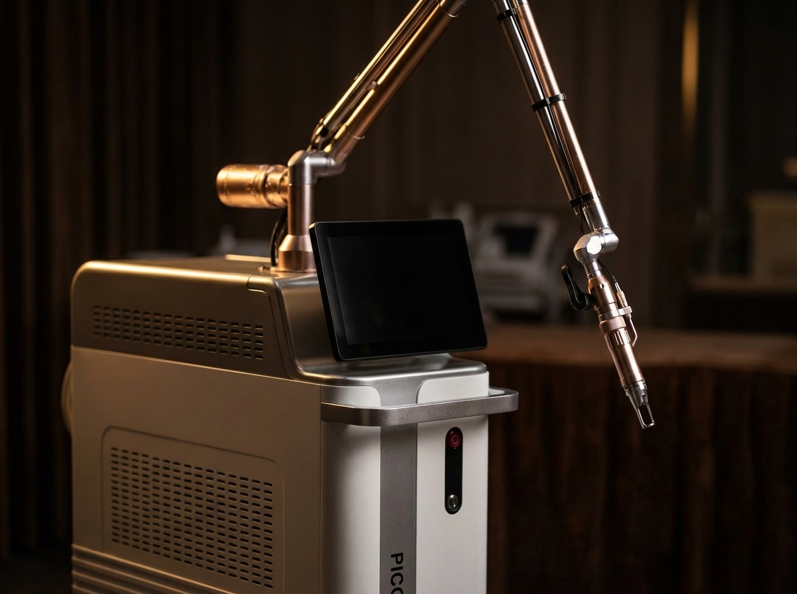

Behandelgids

Of het nu gaat om een tatoeage, een verouderde permanente make-up-behandeling of pigment dat opnieuw moet worden voorbereid voor een preciezere hairstroke- of SMP-behandeling: laser tattoo verwijdering biedt een veilige, gecontroleerde manier om ongewenst pigment te verwijderen of te verzachten.
Een Picosecond-laser stuurt ultrakorte laserpulsen — gemeten in picoseconden — op het pigment in de huid. Deze pulsen breken de pigmentdeeltjes op in fijnere fragmenten, die het lichaam vervolgens op natuurlijke wijze afvoert. Doordat de pulsen zo kort zijn, wordt het omliggende weefsel minder belast dan bij oudere lasertechnieken, wat het comfort tijdens en het herstel na de behandeling ten goede komt.
Bij pigmentverwijdering op de hoofdhuid of in het gezicht is terughoudendheid belangrijker dan snelheid. De huid op deze zones is dunner en gevoeliger dan bijvoorbeeld op een arm, en het doel is meestal niet alleen "weg met het pigment" maar een huid die daarna weer opnieuw behandeld kan worden. Daarom werken we volgens een aantal vaste uitgangspunten:
We bekijken het bestaande pigment, uw huidtype en wat u wilt bereiken. Belangrijk is ook de voorgeschiedenis: wanneer is het pigment gezet, door wie, en is er eerder geprobeerd het te verwijderen? Op basis daarvan wordt een realistisch plan opgesteld — inclusief een eerlijke inschatting van wat haalbaar is.
Het pigment wordt in meerdere sessies afgebroken. Tussen elke sessie zit voldoende rust zodat de huid kan herstellen en het lichaam het gefragmenteerde pigment kan afvoeren. Per sessie wordt opnieuw beoordeeld hoe het pigment reageert, en worden de instellingen zo nodig bijgesteld.
U ontvangt duidelijke nazorginstructies over reinigen, hydrateren en zonbescherming. Het resultaat is niet direct zichtbaar: het pigment vervaagt geleidelijk in de weken ná elke sessie, naarmate het lichaam het afvoert.
Dit is sterk afhankelijk van de leeftijd, kleur, diepte en dichtheid van het pigment. Oudere, donkere tatoeages reageren doorgaans sneller dan recentere of felgekleurde pigmenten. Tussen de sessies wordt enkele weken rust genomen, zodat de huid het losgemaakte pigment kan afvoeren voordat een volgende sessie wordt ingepland. Het exacte aantal sessies wordt pas duidelijk na beoordeling tijdens het consult.
Laserverwijdering wordt bij MHP Centrum vooral ingezet voor:
Of laserverwijdering in uw situatie de juiste route is — of dat corrigeren zonder verwijderen volstaat — wordt tijdens het consult beoordeeld. Zie Correctie & Herstel voor die afweging.
Twee vragen die vrijwel altijd terugkomen. Wat betreft haar: haren in het behandelde gebied kunnen tijdelijk lichter of wit worden door de laserenergie. Dit herstelt zich doorgaans bij de natuurlijke haargroei. Wat betreft littekens: het risico daarop is klein wanneer er rustig en gedoseerd wordt gewerkt met voldoende tijd tussen de sessies — precies de reden waarom wij niet forceren. Beide punten worden tijdens het consult uitgebreid met u besproken, toegespitst op uw huid en situatie.
Laser tattoo verwijdering wordt regelmatig gebruikt om verouderde of verkleurde permanente make-up (bijvoorbeeld eerder gezette wenkbrauwen) te verzachten of te verwijderen, zodat er een schone basis ontstaat voor een nieuwe, verfijnde hairstroke-behandeling. Ook bij het corrigeren van oude of onregelmatige scalp-pigmentatie kan dit een waardevolle eerste stap zijn voordat een nieuwe SMP-behandeling wordt gestart. Zie Correctie & Herstel voor de twee routes die we in zo'n situatie beoordelen.
De sensatie wordt vaak vergeleken met een lichte tik van een elastiekje. Na de behandeling kan de huid tijdelijk rood of gezwollen zijn. Heldere nazorginstructies zorgen dat de huid optimaal kan herstellen tussen sessies.
Tijdens het consult beoordelen we het pigment en stellen we een behandelplan op maat op.
Plan een consult